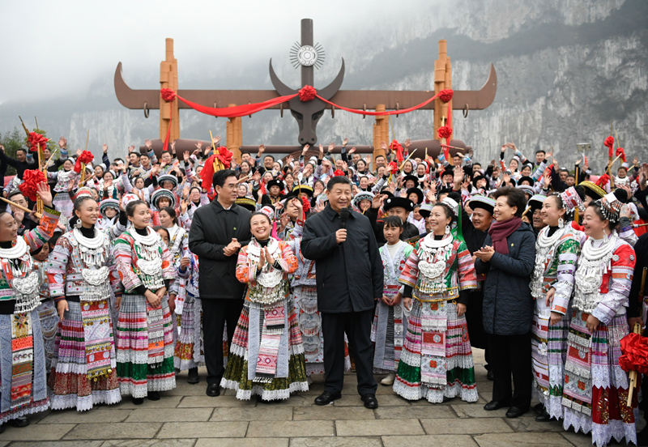
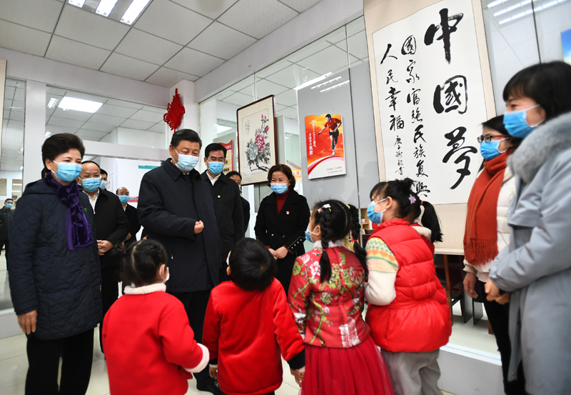
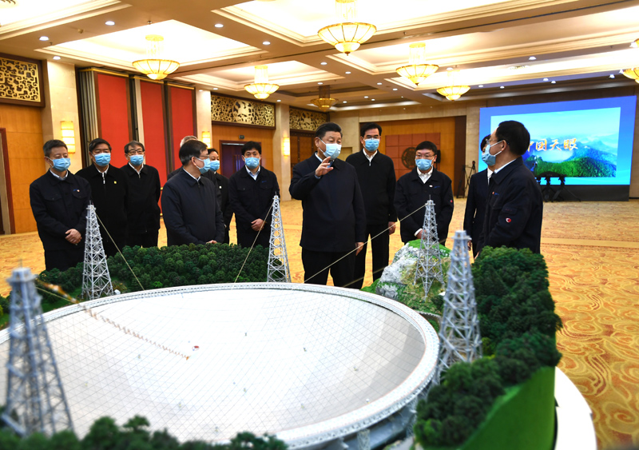
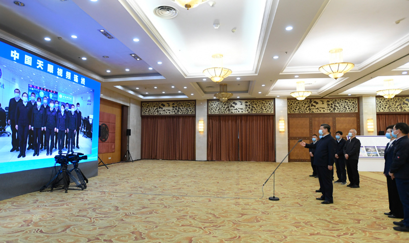

习近平春节前夕赴贵州看望慰问各族干部群众
向全国各族人民致以美好的新春祝福 祝各族人民幸福吉祥祝伟大祖国繁荣富强
中华民族传统节日农历牛年春节即将到来之际，中共中央总书记、国家主席、中央军委主席习近平来到贵州，看望慰问各族干部群众，向全国各族人民、向港澳台同胞和海外侨胞致以美好的新春祝福，祝福大家身体健康、家庭幸福、事业顺利、牛年吉祥！祝愿伟大祖国山川锦绣、欣欣向荣、繁荣富强！

2月3日至5日，中共中央总书记、国家主席、中央军委主席习近平来到贵州考察调研，看望慰问各族干部群众，向全国各族人民致以美好的新春祝福。这是3日下午，习近平在毕节市黔西县新仁苗族乡化屋村文化广场上，向全国各族人民、港澳台同胞和海外侨胞拜年。新华社记者 李学仁 摄
2月3日至5日，中共中央总书记、国家主席、中央军委主席习近平来到贵州考察调研，看望慰问各族干部群众，向全国各族人民致以美好的新春祝福。这是4日下午，习近平在贵阳市观山湖区合力惠民生鲜超市同置办年货的群众亲切交流。新华社记者 李学仁 摄
2月3日至5日，习近平在贵州省委书记谌贻琴和省长李炳军陪同下，先后来到毕节、贵阳等地，深入农村、社区、超市等考察调研，给各族干部群众送去党中央的关怀和慰问。
2月3日至5日，中共中央总书记、国家主席、中央军委主席习近平来到贵州考察调研，看望慰问各族干部群众，向全国各族人民致以美好的新春祝福。这是5日上午，习近平通过视频察看“中国天眼”现场，同总控室的科技工作者代表亲切交流，并向全国广大科技工作者拜年。新华社记者 李学仁 摄
3日下午，习近平首先来到毕节市考察。毕节曾是西部贫困地区的典型。上世纪80年代，在党中央亲切关怀下，国务院批准建立了毕节“开发扶贫、生态建设”试验区。习近平十分牵挂毕节的发展，党的十八大后3次就毕节试验区工作作出重要指示批示，对推动实施好《深入推进毕节试验区改革发展规划（2013－2020年）》提出了明确要求。30多年来，毕节坚持一张蓝图绘到底，试验区建设取得显著成效，2020年完成了脱贫攻坚任务。
2月3日至5日，中共中央总书记、国家主席、中央军委主席习近平来到贵州考察调研，看望慰问各族干部群众，向全国各族人民致以美好的新春祝福。这是3日下午，习近平来到毕节市黔西县，实地察看乌江六冲河段生态环境。新华社记者 谢环驰 摄
乌江是贵州省第一大河，也是长江上游右岸最大支流。在毕节市黔西县新仁苗族乡的乌江六冲河段，习近平远眺乌江山水，听取乌江流域水污染防治、生态修复保护、实施禁渔禁捕等情况汇报。
2月3日至5日，中共中央总书记、国家主席、中央军委主席习近平来到贵州考察调研，看望慰问各族干部群众，向全国各族人民致以美好的新春祝福。这是3日下午，习近平来到毕节市黔西县，实地察看乌江六冲河段生态环境。新华社记者 李学仁 摄
习近平来到化屋码头，沿江岸步行察看乌江生态环境和水质情况，对当地加强入河排污口管理和水质监测体系建设的做法表示肯定。他强调，要牢固树立绿水青山就是金山银山的理念，守住发展和生态两条底线，努力走出一条生态优先、绿色发展的新路子。
2月3日至5日，中共中央总书记、国家主席、中央军委主席习近平来到贵州考察调研，看望慰问各族干部群众，向全国各族人民致以美好的新春祝福。这是3日下午，习近平来到毕节市黔西县，实地察看乌江六冲河段生态环境。新华社记者 谢环驰 摄
接着，习近平来到化屋村考察调研。化屋村曾经是深度贫困村，近年来通过发展特色种植养殖和旅游业，实现了贫困人口清零。习近平听取了化屋村巩固拓展脱贫攻坚成果、接续推进乡村振兴、加强基层党建等情况介绍。
2月3日至5日，中共中央总书记、国家主席、中央军委主席习近平来到贵州考察调研，看望慰问各族干部群众，向全国各族人民致以美好的新春祝福。这是3日下午，习近平在毕节市黔西县新仁苗族乡化屋村村委会考察调研。新华社记者 李学仁 摄
在苗族村民赵玉学家，习近平仔细察看生活居住环境，同赵玉学一家制作当地传统节日食品黄粑，并聊起家常。赵玉学告诉总书记，原来住在不通水、不通电、不通路的麻窝寨，现在住上了二层小楼，水电路都通到了家。习近平听了十分高兴。他指出，就业是巩固脱贫攻坚成果的基本措施。要积极发展乡村产业，方便群众在家门口就业，让群众既有收入，又能兼顾家庭，把孩子教育培养好。他祝福赵玉学一家日子越过越幸福甜美。
2月3日至5日，中共中央总书记、国家主席、中央军委主席习近平来到贵州考察调研，看望慰问各族干部群众，向全国各族人民致以美好的新春祝福。这是3日下午，习近平在毕节市黔西县新仁苗族乡化屋村苗族村民赵玉学家，同赵玉学一家边聊家常边制作当地传统节日食品黄粑。新华社记者 李学仁 摄
2月3日至5日，中共中央总书记、国家主席、中央军委主席习近平来到贵州考察调研，看望慰问各族干部群众，向全国各族人民致以美好的新春祝福。这是3日下午，习近平在毕节市黔西县新仁苗族乡化屋村苗族村民赵玉学家，同赵玉学一家亲切聊家常。新华社记者 李学仁 摄
化屋村以苗族为主，是中国民间文化艺术之乡。习近平走进扶贫车间，了解发展特色苗绣产业、传承民族传统文化等情况。他指出，民族的就是世界的。特色苗绣既传统又时尚，既是文化又是产业，不仅能够弘扬传统文化，而且能够推动乡村振兴，要把包括苗绣在内的民族传统文化传承好、发展好。
2月3日至5日，中共中央总书记、国家主席、中央军委主席习近平来到贵州考察调研，看望慰问各族干部群众，向全国各族人民致以美好的新春祝福。这是3日下午，习近平在毕节市黔西县新仁苗族乡化屋村文化广场上，向全国各族人民、港澳台同胞和海外侨胞拜年。新华社记者 谢环驰 摄
2月3日至5日，中共中央总书记、国家主席、中央军委主席习近平来到贵州考察调研，看望慰问各族干部群众，向全国各族人民致以美好的新春祝福。这是3日下午，习近平在毕节市黔西县新仁苗族乡化屋村文化广场上，向全国各族人民、港澳台同胞和海外侨胞拜年。新华社记者 李学仁 摄
村文化广场上，乡亲们正在开展春节民俗活动，打起鼓、吹芦笙，载歌载舞，唱起了欢快的苗家迎客歌。看到总书记来了，大家齐声欢呼“总书记好”。习近平亲切地对乡亲们说，今年我们将迎来全面建成小康社会、实现第一个百年奋斗目标的伟大胜利。中华民族是个大家庭，五十六个民族五十六朵花。全面建成小康社会，一个民族不能落下；全面建设社会主义现代化，一个民族也不能落下。脱贫之后，要接续推进乡村振兴，加快推进农业农村现代化。希望乡亲们继续努力奋斗，把乡村产业发展得更好，把乡村建设得更美。临别时，乡亲们依依不舍簇拥着总书记，齐唱苗家留客歌，深情的歌声在乌江上空久久回荡。
2月3日至5日，中共中央总书记、国家主席、中央军委主席习近平来到贵州考察调研，看望慰问各族干部群众，向全国各族人民致以美好的新春祝福。这是3日下午，习近平在毕节市黔西县新仁苗族乡化屋村考察结束时，乡亲们依依不舍簇拥着总书记，齐唱苗家留客歌。新华社记者 谢环驰 摄
习近平4日在贵阳市考察调研。他首先来到观山湖区合力惠民生鲜超市，察看春节前市场供应、年货供销、物价运行等情况。惠民生鲜连锁超市由贵阳市政府和农产品流通企业合作建设，打造具有公益性的商品平价零售终端，解决老百姓“买菜难、买菜贵”问题。习近平仔细察看商品价格，了解当地“菜篮子”、“米袋子”、“果盘子”等供应保障情况。他指出，合力惠民生鲜超市的运营模式很有特色，以政府为主导，政府和企业联合，一头连着田间地头的农民，一头连着千家万户的市民，坚持保本微利经营，让农民和市民两头都得实惠，体现了合力惠民，这种模式和经营理念值得推广。
2月3日至5日，中共中央总书记、国家主席、中央军委主席习近平来到贵州考察调研，看望慰问各族干部群众，向全国各族人民致以美好的新春祝福。这是4日下午，习近平在贵阳市观山湖区合力惠民生鲜超市，察看春节前市场供应、年货供销、物价运行等情况。新华社记者 谢环驰 摄
2月3日至5日，中共中央总书记、国家主席、中央军委主席习近平来到贵州考察调研，看望慰问各族干部群众，向全国各族人民致以美好的新春祝福。这是4日下午，习近平在贵阳市观山湖区合力惠民生鲜超市，察看春节前市场供应、年货供销、物价运行等情况。新华社记者 李学仁 摄
前来置办年货的群众热情向总书记问好。习近平亲切询问大家年货备齐没有。习近平强调，各级党委、政府和领导干部要把事关百姓切身利益的事情抓实抓好，尤其要落实防疫措施，加强食品安全监管，确保百姓过年安心、放心、舒心。
2月3日至5日，中共中央总书记、国家主席、中央军委主席习近平来到贵州考察调研，看望慰问各族干部群众，向全国各族人民致以美好的新春祝福。这是4日下午，习近平在贵阳市观山湖区合力惠民生鲜超市同置办年货的群众亲切交流。新华社记者 谢环驰 摄
观山湖区金阳街道金元社区以党建为引领，积极推行党建网、平安网、民生网“三网融合”，提升了基层治理能力和水平。习近平来到金元社区，了解开展便民服务、加强基层党建等情况。习近平指出，基层强则国家强，基层安则天下安，必须抓好基层治理现代化这项基础性工作。要坚持为民服务宗旨，把城乡社区组织和便民服务中心建设好，强化社区为民、便民、安民功能，做到居民有需求、社区有服务，让社区成为居民最放心、最安心的港湾。
2月3日至5日，中共中央总书记、国家主席、中央军委主席习近平来到贵州考察调研，看望慰问各族干部群众，向全国各族人民致以美好的新春祝福。这是4日下午，习近平在贵阳市观山湖区金阳街道金元社区考察开展便民服务、加强基层党建工作情况。新华社记者 李学仁 摄

2月3日至5日，中共中央总书记、国家主席、中央军委主席习近平来到贵州考察调研，看望慰问各族干部群众，向全国各族人民致以美好的新春祝福。这是4日下午，习近平在贵阳市观山湖区金阳街道金元社区，看望慰问社区居民。新华社记者 谢环驰 摄
习近平强调，当前外防输入、内防反弹任务仍然艰巨。为减少疫情传播风险，提倡就地过年。各地区各部门要做好就地过年的服务保障工作，让群众过一个特别而又温馨的春节。
2月3日至5日，中共中央总书记、国家主席、中央军委主席习近平来到贵州考察调研，看望慰问各族干部群众，向全国各族人民致以美好的新春祝福。这是4日下午，习近平在贵阳市观山湖区金阳街道金元社区广场，向居民们挥手致意。新华社记者 谢环驰 摄
在社区广场，居民们高声向总书记问好。习近平频频向大家挥手致意，祝福大家新的一年一切都好、好上加好。他强调，过去一年极不平凡，有惊涛骇浪，有奋力拼搏，更有成功和胜利，每个人都感同身受，每个人都了不起。今年我们将开始实施“十四五”规划，开启全面建设社会主义现代化国家新征程，向第二个百年奋斗目标迈进，我们要继续齐心协力干、加油好好干，努力干成一番新事业，干出一片新天地。
2月3日至5日，中共中央总书记、国家主席、中央军委主席习近平来到贵州考察调研，看望慰问各族干部群众，向全国各族人民致以美好的新春祝福。这是4日下午，习近平在贵阳市观山湖区金阳街道金元社区同社区群众亲切交流。新华社记者 丁海涛 摄
2月3日至5日，中共中央总书记、国家主席、中央军委主席习近平来到贵州考察调研，看望慰问各族干部群众，向全国各族人民致以美好的新春祝福。这是4日下午，习近平在贵阳市观山湖区金阳街道金元社区同社区群众亲切交流。新华社记者 李学仁 摄
位于贵州省的500米口径球面射电望远镜，是目前世界上最大的单口径射电望远镜，有“中国天眼”之称。5日上午，习近平亲切会见了“中国天眼”项目负责人和科研骨干，听取“中国天眼”建设历程、技术创新、国际合作等情况介绍。习近平指出，“中国天眼”是国家重大科技基础设施，是观天巨目、国之重器，实现了我国在前沿科学领域的一项重大原创突破，以南仁东为代表的一大批科技工作者为此默默工作，无私奉献，令人感动。

2月3日至5日，中共中央总书记、国家主席、中央军委主席习近平来到贵州考察调研，看望慰问各族干部群众，向全国各族人民致以美好的新春祝福。这是5日上午，习近平亲切会见“中国天眼”项目负责人和科研骨干，听取“中国天眼”建设历程、技术创新、国际合作等情况介绍。新华社记者 谢环驰 摄
习近平通过视频察看“中国天眼”现场，并同总控室的科技工作者代表连线，向他们并向全国广大科技工作者拜年。习近平强调，全面建设社会主义现代化国家，必须坚持科技为先，发挥科技创新的关键和中坚作用。他勉励广大科技工作者以南仁东等杰出科学家为榜样，大力弘扬科学家精神，勇攀世界科技高峰，在一些领域实现并跑领跑，为加快建设科技强国、实现科技自立自强作出新的更大贡献。

2月3日至5日，中共中央总书记、国家主席、中央军委主席习近平来到贵州考察调研，看望慰问各族干部群众，向全国各族人民致以美好的新春祝福。这是5日上午，习近平通过视频察看“中国天眼”现场，同总控室的科技工作者代表亲切交流，并向全国广大科技工作者拜年。新华社记者 李学仁 摄
5日上午，习近平听取了贵州省委和省政府工作汇报，对贵州各项工作取得的成绩给予肯定，希望贵州坚持稳中求进工作总基调，立足新发展阶段、贯彻新发展理念、构建新发展格局，坚持以高质量发展统揽全局，守好发展和生态两条底线，统筹发展和安全工作，在新时代西部大开发上闯新路，在乡村振兴上开新局，在实施数字经济战略上抢新机，在生态文明建设上出新绩，努力开创百姓富、生态美的多彩贵州新未来。
习近平强调，创新发展是构建新发展格局的必然选择。要着眼于形成新发展格局，推动大数据和实体经济深度融合，培育壮大战略性新兴产业，加快发展现代产业体系。要积极释放消费需求，拓展消费新模式，把消费潜力充分释放出来。要发挥好改革的先导和突破作用，更多解决深层次体制机制问题，多做创新性探索，多出制度性成果。要积极参与西部陆海新通道建设，主动融入粤港澳大湾区发展，加快沿着“一带一路”走出去，以开放促改革、促发展。
2月3日至5日，中共中央总书记、国家主席、中央军委主席习近平来到贵州考察调研，看望慰问各族干部群众，向全国各族人民致以美好的新春祝福。这是4日下午，习近平在贵阳市观山湖区合力惠民生鲜超市同置办年货的群众亲切交流。新华社记者 谢环驰 摄
习近平指出，要做好巩固拓展脱贫攻坚成果同乡村振兴有效衔接，加强动态监测帮扶，落实“四个不摘”要求，跟踪收入变化和“两不愁三保障”巩固情况，定期核查，动态清零。要发展壮大扶贫产业，拓展销售渠道，加强对易地搬迁群众的后续扶持。要推动城乡融合发展，推动乡村产业、人才、文化、生态、组织等全面振兴。要继续选派驻村第一书记和农村工作队。
2月3日至5日，中共中央总书记、国家主席、中央军委主席习近平来到贵州考察调研，看望慰问各族干部群众，向全国各族人民致以美好的新春祝福。这是3日下午，习近平在毕节市黔西县新仁苗族乡化屋村扶贫车间，了解发展特色苗绣产业、传承民族传统文化等情况。新华社记者 谢环驰 摄
习近平强调，优良生态环境是贵州最大的发展优势和竞争优势。要牢固树立生态优先、绿色发展的导向，统筹山水林田湖草系统治理，加大生态系统保护力度，科学推进石漠化、水土流失综合治理，不断做好绿水青山就是金山银山这篇大文章。
2月3日至5日，中共中央总书记、国家主席、中央军委主席习近平来到贵州考察调研，看望慰问各族干部群众，向全国各族人民致以美好的新春祝福。这是3日下午，习近平来到毕节市黔西县，实地察看乌江六冲河段生态环境。新华社记者 谢环驰 摄
习近平指出，共同富裕本身就是社会主义现代化的一个重要目标，要坚持以人民为中心的发展思想，尽力而为、量力而行，主动解决地区差距、城乡差距、收入差距等问题，让群众看到变化、得到实惠。要落实就业优先战略和积极的就业政策，突出解决好教育、养老、医疗、住房等问题，加强疾病预防控制体系建设，推进民法典实施，加强预防和化解社会矛盾机制建设，深化扫黑除恶专项斗争，加强安全生产工作。要支持少数民族和民族地区发展特色优势产业，繁荣发展少数民族文化。
2月3日至5日，中共中央总书记、国家主席、中央军委主席习近平来到贵州考察调研，看望慰问各族干部群众，向全国各族人民致以美好的新春祝福。这是3日下午，习近平在毕节市黔西县新仁苗族乡化屋村考察结束时，乡亲们依依不舍簇拥着总书记，齐唱苗家留客歌。新华社记者 谢环驰 摄
习近平强调，当年长征时，红军在贵州活动时间最长、活动范围最广，为我们留下宝贵精神财富。遵义会议是我们党历史上一次具有伟大转折意义的重要会议。这次会议在红军第五次反“围剿”失败和长征初期严重受挫的历史关头召开，确立了毛泽东同志在党中央和红军的领导地位，开始确立了以毛泽东同志为主要代表的马克思主义正确路线在党中央的领导地位，开始形成以毛泽东同志为核心的党的第一代中央领导集体，开启了我们党独立自主解决中国革命实际问题的新阶段，在最危急关头挽救了党、挽救了红军、挽救了中国革命。遵义会议的鲜明特点是坚持真理、修正错误，确立党中央的正确领导，创造性地制定和实施符合中国革命特点的战略策略。这在今天仍然具有十分重要的意义。要结合即将开展的党史学习教育，从长征精神和遵义会议精神中深刻感悟共产党人的初心和使命，落实新时代党的建设总要求，实事求是、坚持真理，科学应变、主动求变，咬定目标、勇往直前，走好新时代的长征路。要深入学习党的创新理论，加强党史学习教育，同时学习新中国史、改革开放史、社会主义发展史，不断提高政治判断力、政治领悟力、政治执行力。要把造福人民作为最重要的政绩，坚决反对和克服形式主义、官僚主义。要一体推进不敢腐、不能腐、不想腐，不断净化政治生态，营造风清气正的发展环境。
丁薛祥、刘鹤、陈希、何立峰和中央有关部门负责同志陪同考察。